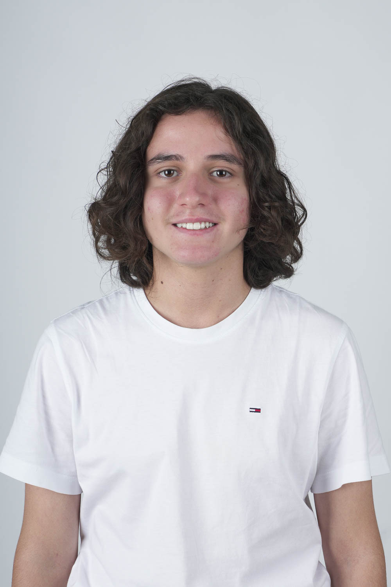

Über mich

Willkommen!
Mein Name ist Aulon Gashi. Ich bin in der Firma EGELI Informatik AG als Lernender im ersten Lehrjahr tätig,
besuche die Berufsschule in Rietshüsli und die BMS in St. Gallen.
Ich mache eine kleine Vorausbildung im ICT Berufsbildungscenter AG, bevor ich in die wirkliche Arbeit in der
EGELI Informatik starte.